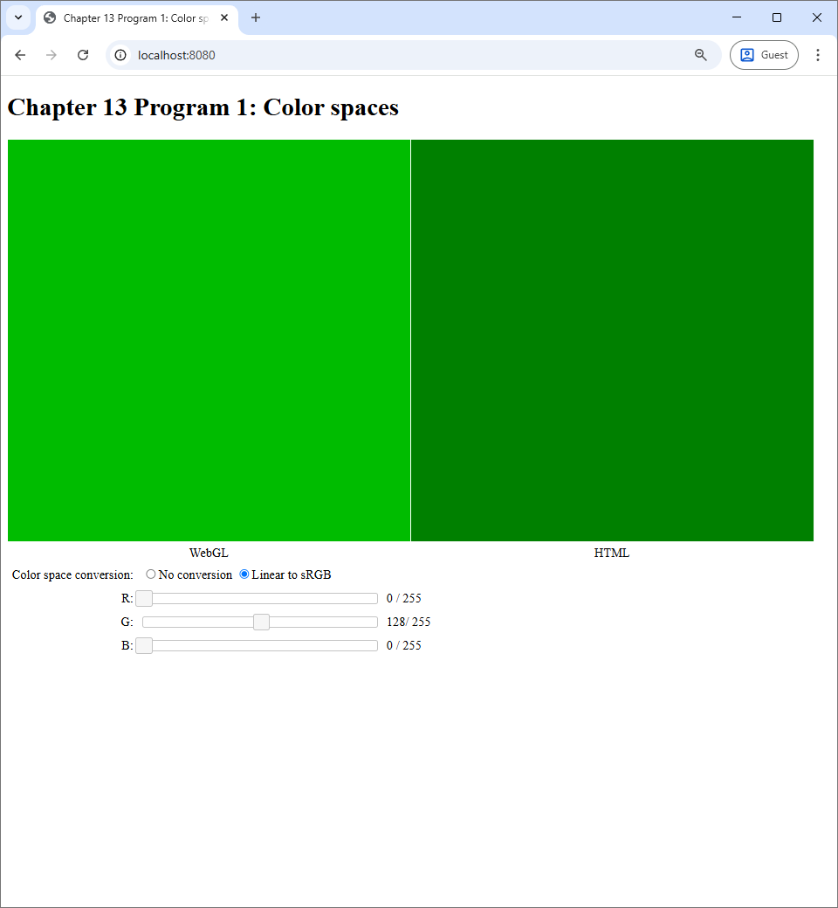

13 Fragment Shaders
We learned that a WebGL program is made up of at least 3 programs: the host Javascript program, the vertex shaders, and the fragment shaders. In the past two chapters, we focused on the vertex shader and saw that it can be used to create complicated shapes in Chapter 11. We also learned that uniform variables can be used in the vertex shaders to create simple animations in the last chapter.
In this chapter, we turn our attention to the fragment shader. Recall from Chapter 7 that the fragment shader has two responsibilities: (1) deciding whether to discard a fragment or not, and (2) computing the color of the fragment if it is not discarded. We will see in this chapter that the fragment shader is very powerful because it determines colors that would finally appear on the screen.
As you might recall from Chapter 2, color is quite a complicated subject in its own right. A programmer must be aware of the color space of each color value they manipulate, and this is especially important when writing a fragment shader. Luckily, there are only two color spaces we need to worry about: linear and sRGB. In Program 1, we will discuss a function that converts from the linear space to the sRGB space and discuss why it is important. This function will be used throughout the rest of the book.
The mechanism that makes the fragment shader powerful is the varying variable, which is a mechanism that allows the vertex shader to pass information to the fragment shader. Varying variables allow use to create color gradients, which we will demonstrate in Program 2.
Moreover, varying variables allows the fragment shader to know about the fragment it is processing. One of the most useful information about the fragment is its position on the screen, and a way to set up the scene so that each fragmeht knows its position is to render a "full screen quad", which we will discuss in Program 3. The fragment position allows us to compute a color as a function of it, which is an image, and we shall see in Program 4 that this image can be very complicated even when our fragment shader is quite simple.
13.1 Program 1: Color spaces
13.1.1 Color spaces and the fragment shader
Recall from Section 2.3 that a color space specifies the mapping from the RGB color cube the actual color that appearas on the screen. The color space used by your web browser is the sRGB color space. So, in an HTML file, when you specify the color #EA8032, which translates to the RGB value of $(234, 128, 50)$ or approximately $(0.92, 0.50, 0.20)$ if we use floating point numbers, the fact that you see the orange color ■ is because the sRGB color spaces chooses to associate $(0.92, 0.50, 0.20)$ with this particular color. We also learn that the sRGB color space is not physical, meaning that a tristimulus value of $0.5$ is not half as powerful (i.e., as bright) as $1.0$. The color space where tristimulus values corresponds to light power emitted by the monitor is the linear color space. We also learns the rule of thumb that all intermediate calculations should be performed in the the linear space while all output values should be in the sRGB space.
How are the above facts and rule apply to how we should write fragment shaders? The first thing to keep in mind is that any color value that appears on the screen is automatically in the sRGB color space. This is simply because it is the color space that the browser uses. For all the previous programs up to this point, this output color is what we assign to the fragment shader's output variable, which is always called fragColor. So, this means that fragColor is always in the sRGB color space. (This will no longer apply when the fragment shader does not output to the screen, but we will talk about this later.)
Second, to follow the "compute in linear, output in sRGB" rule, we should follow another two simple rules when we write our programs.
- All color variables other than
fragColorare in the linear space. - We must convert from linear to sRGB when assigning a value to
fragColor.
Unfortunately, there are no automatic mechanisms such as a compiler that would enforce these rules for us. The program must instead enforce these rules by themself. Being mindful of colors spaces practically means convering colors from one space to another at the right places in your program.
13.1.2 Difference between the color spaces
The main point of Program 1 is to show the reader the visual difference between being mindful and not being mindful of color spaces. When you run the program, you will see what is depicted in the screenshot below.
 |
The program acts like a color picker you would see in a painting program like Microsoft Paint, GIMP, or Photoshop. There are three sliders, each corresponding to a tristimulous value in the RGB color space. There are two canvases, one labelled "WebGL" and the other "HTML," that we would show the colors specified by the sliders. The WebGL canvas displays the color through the use of a WebGL program, and the HTML canvas displays the color by manipulating the background-color CSS property of the canvas itself. So, the color shown on the HTML canvas reflects how the web browser normally interprets color values. Lastly, the user how the WebGL canvas would process the color specified by the sliders. When the user chooses the "No conversion" radio box, the WebGL canvas would output the color specified by the sliders without performing any calculation on it. However, when the user chooses the "Linear to sRGB" radio box, the WebGL program would treat the color specified by the sliders to be in the linear color space and perform conversion from linear to sRGB before outputting the color to the canvas. Note that the "Linear to sRGB" option is the one consistent with the rules we discussed in the last section, while the "No conversion" option is not.
To see what the options mean visually, let us manipulate the G slider so that the G value is $128 / 256 \approx 0.5$.
{kind=link}
We can see that the both canvases show the exact same color. This makes sense because, as we said earlier, the web browser's color space is sRGB. So, if the WebGL program just outputs the color without any modification, it would show the exact same color that the browser would natively show. However, if we switch to the "Linear to sRGB" option, we will see that the color in the WebGL canvas becomes brighter.
|  |
{kind=link}
This behavior is consistent with what we learned in Section 2.3: the same color values would appear brighter if it is in the linear color space than when it is in the sRGB color space.